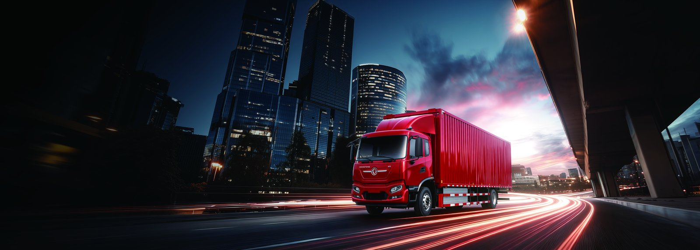

Chile’s Central Valley is the engine of one of the world’s most respected wine industries, and the harvest season turns its roads into a timed logistics machine. Moving bottled and bulk wine from the Maipo and Colchagua valleys to the San Antonio and Valparaiso ports is a seasonal surge that rewards reliability and punishes fuel cost. For exporters, a heavy electric truck such as the KTH3 electric cargo truck now delivers both. Our Chile electric truck market guide details the national picture; here we focus on the wine corridor.
The harvest (vendimia) peaks from February through April in the southern hemisphere summer. During these weeks, wineries in the Maipo (just south of Santiago), Colchagua (near Santa Cruz) and Curicó valleys ship continuously to the coastal ports. The distances are ideal for electrification: Maipo to San Antonio is roughly 90–120 km, Colchagua to San Antonio about 160–190 km, and the Valparaiso route is similar. These are exactly the daily round-trip profiles where a heavy electric rigid truck outperforms diesel on both cost and uptime. The fixed, repeatable nature of the run also makes charging planning trivial — every truck returns to a known depot each night.
Wine is heavy and low-density: a loaded 12 m curtain-side or reefer body of bottled product approaches 25–30 t. The KTH3 is specified for this class — a 49 t GCW-rated heavy electric cargo platform with a CATL LFP pack of 282–350 kWh and a LvKong permanent-magnet motor producing 282–350 kW. Real-world range on the valley-to-port run is 280–350 km depending on load and grades, with full recharge overnight at the winery or port depot. The instant torque of the electric driveline also smooths the stop-go loading yard and the graded coastal approach roads.
Many export shipments require temperature control, either for bulk tanker wine or for premium bottled lines moving through hot summer loading. The KTH3 supports a reefer body powered from the chassis battery, drawing the refrigeration unit without a separate diesel burner — eliminating the single dirtiest component of conventional wine cold chain. For exporters chasing sustainability certifications demanded by European and North American buyers, an electric reefer is a marketable attribute, not just a cost line. The advantages are concrete:
| Wine corridor segment | One-way km | KTH3 fit |
|---|---|---|
| Maipo Valley → San Antonio port | 90–120 km | Single charge, full day |
| Colchagua Valley → San Antonio | 160–190 km | Round trip on one charge |
| Curicó Valley → Valparaiso | 180–210 km | Recharge at port depot |
| Inter-valley transfers | 60–140 km | Multi-drop feasible |
Chilean diesel for fleets runs near US$1.05–1.15/litre; commercial electricity at winery and port tariffs is near US$0.13–0.16/kWh. The KTH3 consumes about 1.3 kWh/km loaded; a comparable diesel rigid burns about 0.34 L/km.
| Cost element | Diesel 30t rigid | KTH3 EV truck |
|---|---|---|
| Energy / km | 0.34 L × US$1.10 = US$0.37 | 1.3 kWh × US$0.15 = US$0.20 |
| Maintenance / km | US$0.11 | US$0.04 |
| Total operating / km | US$0.48 | US$0.24 |
| Annual saving at 60,000 km | — | US$14,400 |
Against the US$88,000–105,000 FOB price, the saving recovers the EV premium over a diesel landed unit in four to five years, with the battery warranty (8 years / 4,500 cycles to 70% SOH) covering the heavy seasonal cycling. Harvest-season surges that would strain a small diesel fleet are absorbed by simply adding charging windows.
The neat trick of the wine corridor is that both ends have cheap, off-peak power. Wineries run their own substations and can charge overnight at the lowest tariff; the San Antonio and Valparaiso port logistics zones are adding depot DC charging for trucks waiting on vessel schedules. With DC 20–80% charge in 35–60 minutes, a KTH3 can top up during a port loading window and return empty to the valley on a single charge.
Wine buyers in the EU and UK increasingly score suppliers on transport carbon. A KTH3 hauling export wine lets a Chilean bodega claim a verifiably lower logistics footprint — a commercial edge in tenders. For fleets, we recommend beginning with the Colchagua-to-San Antonio run, the longest daily leg, where the electric truck’s range and the avoided diesel cost are most visible. During peak vendimia, the same KTH3 units simply run more shifts, charging between turns rather than buying additional diesel trucks that sit idle for the rest of the year.
A heavy electric truck in harvest service lives or dies by its support network. The KTH3 is engineered so that the high-voltage system is sealed and self-diagnosing, while the conventional parts — brakes, suspension, cabin, low-voltage wiring — are serviced by any competent Chilean workshop using standard tools. Our parts consignment for first Chilean fleets includes the complete fast-moving list: filters, brake components, tyres, wiper and lighting parts, plus a managed stock of HV contactors and the thermal-management pumps. The 8-year / 4,500-cycle battery warranty to 70% SOH removes the single largest residual-value worry for a cooperative finance committee, and we offer remote diagnostics so a fault is often resolved by our technical desk before a truck is taken off the road. For the short, repeatable wine-corridor loops, scheduled maintenance is easy to plan around the off-season, so the KTH3 is never unexpectedly down during vendimia.
The wine corridor’s economics are shaped as much by the shipping calendar as by the road. San Antonio and Valparaiso sail on fixed weekly windows to the US west coast and northern Europe, so a KTH3 that misses a vessel slot holds its cargo and its value an extra week. Because the electric truck recharges overnight at the winery and tops up during the port loading window in 35–60 minutes, it is rarely the bottleneck; a diesel truck stuck in a fuel queue or a breakdown is more often the cause of a missed slot. During vendimia, when every day of delay is expensive, the KTH3’s predictable availability lets a bodega commit to tighter delivery promises to its importer. The 282–350 kWh pack also means one truck can run the Colchagua-to-San Antonio round trip and still have margin for a same-day return load of empty containers, improving asset utilisation without a second diesel unit. That scheduling reliability is part of what European buyers implicitly pay for.
Shaanxi Fenghan Trading supplies the KTH3 electric cargo truck to Chilean logistics operators with Spanish documentation, reefer integration options, and export payment terms. Our Chile EV truck market guide covers import and homologation. For the Central Valley, electrifying the harvest run is both the lowest-risk and the highest-visibility first move.
The business case is unusually clean: a fixed, repeatable loop, cheap power at both ends, and a buyer base that rewards low-carbon freight. For a Chilean bodega or logistics operator, the KTH3 is less a leap than a straightforward modernisation of the harvest run — one that pays for itself while telling a sustainability story European buyers already want to hear.
Ready to electrify your fleet? Contact Shaanxi Fenghan Trading — authorized Dongfeng EV truck exporter. WhatsApp: +86 153 1943 1311 | Email: sales@fenghan-trade.com | dongfengevtrucks.com
🌐 Our Network: Fenghan Trade (SAGMOTO/SHACMAN Truck Export) · SAGMOTO cargo truck flatbed box stake